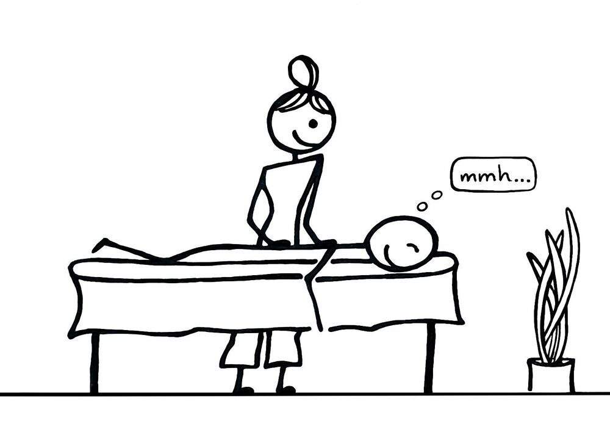

Miri's Massage
& Polarity – Massage & Polarity für Körper und Geist in Winterthur
Massage & Polarity für Körper und Geist
Achtsame Körperarbeit und Prozessbegleitung
Finde zurück in dein natürliches Gleichgewicht. In meiner Praxis in Winterthur begleite ich dich mit achtsamer Berührung, gezielten Massagen und stärkender Energiearbeit zu mehr Entspannung und Vitalität.
Praxistage: Mittwoch und Freitag, 10–20 Uhr · Erste Massage 80 CHF
Termin buchen →1
Herzlich Willkommen! Schön, dass du hier bist!
Bist du körperlich angespannt? Schränkt dich dein Körper im Alltag ein? Hast du Muskelschmerzen? Oder möchtest du dich einfach mal genüsslich entspannen und dir so etwas Gutes tun? Dann bist du bei mir genau richtig.

vorher
3Warum Massage?
Mit der Massage wird durch manuellen Druck und Zug auf deine Muskeln die Durchblutung gefördert. Dein Stoffwechsel wird angeregt. Deine Muskeln entspannen sich und schmerzhafte Verhärtungen lösen sich auf.
Die Massage reduziert Stress im gesamten Organismus. So können nicht nur körperliche Beschwerden wie z.B. Kopfschmerzen, sondern auch psychische Leiden wie Depressionen und Angstzustände gelindert werden. Ein ganzheitliches Wohlbefinden entsteht.
Sitzende Tätigkeiten, Stress und einseitige Belastungen hinterlassen Spuren in der Muskulatur. In meiner Praxis in Winterthur verbinde ich anatomisches Feingefühl mit hochwertigen Ölen, um Verhärtungen sanft zu lösen und dein Wohlbefinden wiederherzustellen.
 nachher
nachherMein Angebot
Ob gezielte Linderung körperlicher Verspannungen oder energetische Harmonisierung: Ich begleite dich mit fundierter Erfahrung und achtsamen Behandlungsmethoden. Als Dipl. Klassische Masseurin und Polaritytherapeutin in Ausbildung biete ich dir folgendes an:
Klassische Massage
(Klassische Ölmassage)
Löst gezielt muskuläre Verspannungen, regt die Durchblutung an und fördert die spürbare Regeneration von Körper und Muskulatur nach körperlicher Belastung oder stressigen Tagen.30 / 60 minmehr lesen
Klassisch fokussiert (30 min): Ideal für die gezielte Behandlung akuter Verspannungen im Nacken-, Schulter- oder Lendenbereich. Schnelle Entlastung für zwischendurch.
Klassische Massage (60 min): Ausführliche Bearbeitung von Rücken, Nacken und Beinen. Löst tiefsitzende Muskelverspannungen nachhaltig und fördert die Durchblutung.
100 CHFGanzheitliche Massage
Verbindet wirkungsvolle manuelle Techniken mit feinfühliger Körperwahrnehmung. Eine tiefgreifende Auszeit, die das gesamte Nervensystem beruhigt und neue Kraft schenkt.60 minmehr lesen
Die Klassische Massage wird individuell ergänzt mit der Polaritymethode. Dies beinhaltet sanfte, craniosacrale Berührungen, sanfte Schaukelbewegungen, welche das Gewebe lockern, bis tiefere, kräftigere Drucktechniken, osteopathische Griffe, Dehnungen, Mobilisierung der Gelenke und Arbeit mit Reflexzonen, um Blockaden im Körper zu lösen und so die Gesundheit zu unterstützen.
110 CHF
Polaritybehandlung
Unterstützt den freien Fluss der Lebensenergie durch sanfte Berührungen, Energiearbeit und gezielte Impulse. Hilft bei innerer Unruhe und aktiviert deine natürlichen Selbstheilungskräfte.60–90 minmehr lesen
Die erste Polaritybehandlung beinhaltet ein ausführliches Vorgespräch, bei Bedarf eine Haltungsanalyse sowie eine manuelle Behandlung auf der Liege. Mehr dazu weiter unten unter «Polarity».
88 CHF / Std.*Hawaiianische Ganzkörpermassage
(Lomi Lomi)
Ganzheitliches Wellness-Erlebnis mit fliessenden Unterarmstrichen und viel warmem Öl. Bringt Körper, Geist und Nervensystem in tiefe Harmonie.ab 90 minmehr lesen
Tauche ein in eine tief entspannende Körperreise, bei welcher du von Kopf bis Fuss, vorne und hinten massiert wirst. Die fliessenden, langen Streichungen nebst sanften Dehnungen und Lockerung von Gelenken erinnern an die Wellen des Ozeans und machen diese Massage einzigartig.
In einem kurzen Vorgespräch kläre ich mit dir ab, was bei deinem Körper zu beachten ist und ob Berührung/Massage im Gesicht und/oder Bauch erwünscht ist. Am Schluss gebe ich dir 2–3 Minuten Zeit, um die Massage nachwirken zu lassen.
Ergänzend
- Myofasziale Triggerpunktbehandlung+
- Schröpfmassage (mit Schröpfgläsern)+
- Reflexologie (z.B. Füsse, Hände, Ohren)+
Polarity
«Ich halte mich an das, was die Natur mir bestätigt.»
– Dr. Randolph Stone, Begründer der Polarity Therapie
Die erste Polaritybehandlung beinhaltet ein ausführliches Vorgespräch, bei Bedarf eine Haltungsanalyse sowie eine manuelle Behandlung auf der Liege.
Eine Polaritybehandlung ist eine Investition in deine Gesundheit sowie persönliche Weiterentwicklung. Du darfst am Ende selber entscheiden, wie viel dir diese erste Polarityerfahrung finanziell wert ist.
7Polarity …
- Ist eine Synthese von östlicher und westlicher Medizin, wobei die Ganzheit von Körper, Geist und Seele im Vordergrund steht.
- Wurde vom Naturheilarzt, Osteopathen und Chiropraktiker Dr. Randolph Stone (1890–1981) gegründet.
- Geht der Frage nach, was hinter den Erscheinungen (Symptomen) steckt: Wo liegen die tieferen Ursachen und Hintergründe von Gesundheit und Krankheit? Um was geht es wirklich?
- Aktiviert die Selbstheilungskräfte und stärkt die körpereigene Abwehr.
- Beinhaltet Körperarbeit, Körperübungen, Ernährung sowie die Auseinandersetzung mit Lebensstil, Denk- und Verhaltensmustern im begleitenden Gespräch.
- Wird von den meisten Krankenkassen als Komplementärtherapie anerkannt.
Körperarbeit
Polarity ist die Arbeit am bekleideten Körper mit sanften, schaukelnden/bewegenden oder tief ins Gewebe gehenden Berührungen.
Begleitendes Gespräch
Das begleitende Gespräch unterstützt und orientiert die Prozesse, welche sich während der Körperarbeit zeigen können. Dadurch können sich tieferliegende Muster und/oder Traumata lösen.
Durch sprachliche Reflexion lernen wir uns besser kennen, spüren unsere Bedürfnisse klarer und finden Worte für innere Zustände und Empfindungen. Dadurch übernehmen wir stetig mehr Eigenverantwortung. Dies führt zu Selbstvertrauen und Akzeptanz unserer eigenen Individualität. Mit der Sprache begleiten wir, und Worte führen zu mehr Bewusstsein.
Yoga
Eine individuelle und gezielte Auswahl an Yogaübungen vertieft die Wirkung der Behandlung und hat den Vorteil, dass sie als Selbsthilfe angewendet werden kann.
Ernährung
Falsche Ess- und Lebensgewohnheiten führen zu Einlagerungen von Schlacken in Gefässen, Geweben und Gelenken. Dies führt zu Übersäuerung und schafft den Nährboden für Beschwerden und Krankheiten.
Mit der Ernährung beeinflussen wir in direkter Weise unser Befinden. Die Polarity-Ernährung hat zum Ziel, das Ernährungsbewusstsein zu fördern, indem Zusammenhänge zwischen Verhalten, Befinden und Essgewohnheiten ergründet werden. Das Ziel ist somit eine Ernährungsweise zu finden, die den Gesundheitsprozess unterstützt.
Polarity Reinigung
Die Polarity Reinigung entschlackt, entsäuert, schafft Giftstoffe aus dem Körper und entlastet Leber, Nieren, die Verdauungsorgane, die Haut und das Bindegewebe. Müdigkeit, Antriebsmangel oder Allergien – die Warnzeichen für Beschwerden oder Krankheiten – können verschwinden. Ganzheitliches Wohlbefinden und eine innere Ruhe stellen sich ein.
Die Reinigung im Rahmen einer Ernährungsdiät kann als Kur fern vom Alltag oder auch zuhause durchgeführt werden.
Haltung der Therapeutin
Achtsamkeit, Empathie und Respekt sind die Basis, um eine wohlwollende und sichere Umgebung im Therapieraum zu schaffen.
Preise
Transparente Konditionen für deine Auszeit und Regeneration in Winterthur. Profitiere von einem Kennenlernrabatt auf deine erste Massage: Für nur 80 CHF schenke ich dir 30 CHF bei deinem ersten Besuch.
- Kennenlern-Angebot (erste Massage)
- 80 CHF
- Klassische Massage
- 100 CHF
- Ganzheitliche Massage
- 110 CHF
- Polaritybehandlung
- 88 CHF / Std.*
*Die Preise für die Polaritybehandlung werden stets an meinen Ausbildungsstand angepasst:
- letztes Ausbildungsjahr
- 88 CHF / Std.
- mit Diplom
- 110 CHF / Std.
- mit Krankenkassenanerkennung
- 132 CHF
Zahlung & Konditionen
- Zahlungsarten vor Ort
- TWINT, bar oder Karte
- Geschenkgutscheine
- Auf Anfrage erhältlich
- Krankenkasse
- Derzeit noch Selbstzahler
- Terminabsage (mind. 24 h vorher)
- Kostenfrei
Falls du deinen Termin einmal nicht einhalten kannst, melde dich bitte mindestens 24 Stunden vorher schriftlich ab, um dessen Berechnung zu vermeiden.
Massagen und Behandlungen sollten für jeden Menschen zugänglich sein. Falls du nicht- oder wenigverdienend bist, bin ich gerne bereit, dir finanziell entgegenzukommen. Melde dich bitte ungeniert vorab per E-Mail bei mir, damit wir gemeinsam eine individuelle Lösung finden können. mirismassage@gmail.com
10Was meine Arbeit ausmacht
Achtsam.
Aufgrund meiner Feinfühligkeit arbeite ich sehr achtsam mit meinen Händen. So erhältst du eine individuell auf dich abgestimmte Massage.Wohltuend.
Während der Massage arbeite ich in der Stille oder zu sanfter Musik, voll und ganz auf dich fokussiert. Durch das Nichtsprechen nimmst du deinen Körper und die wohltuenden Berührungen intensiver wahr.11Ganzheitlich.
Du profitierst von meinen reichhaltigen Erfahrungen und Wissen aus der Physio- und Ergotherapie, TCM und Kinesiologie. Bei Interesse zeige ich dir Übungen, die dir im Alltag helfen, selber Stress, Anspannung und Schmerzen zu reduzieren.Sozial.
Falls du nicht- oder wenigverdienend bist, bin ich gerne bereit, dir finanziell entgegenzukommen. Melde dich ungeniert per E-Mail bei mir. mirismassage@gmail.com 12
12
Mein Name ist Miriam Pimputkar. In meiner Praxis in Winterthur schaffe ich einen geschützten Raum für Entspannung und Gesundheit. Mit Achtsamkeit, Fachwissen und Leidenschaft begleite ich dich auf deinem Weg zu mehr Wohlbefinden und Vitalität.
13Über mich
Das bin ich: ein fröhliches, bewegungsfreudiges Wesen mit einer grossen Faszination für den menschlichen Körper. Ich liebe es, mit meinen Händen zu arbeiten und mit Menschen in Kontakt zu sein.
Gesund und körperlich frei zu sein, ist keine Selbstverständlichkeit. So praktiziere ich regelmässig eine Mischung aus Pilates, Yoga, Faszientraining, Qi Gong, Meditation und vieles mehr. Was meinem Körper und meiner Seele nicht fehlen darf, ist das Tanzen zu den 5 Rhythmen.
Meine Lebenserfahrungen haben zu einem grossen Interesse an der Heilung des menschlichen Körpers und somit zu einem reichhaltigen therapeutischen Erfahrungsschatz geführt – und dies wiederum zu meiner jetzigen Herzensarbeit als Masseurin und Körpertherapeutin. Es bereichert mich sehr, Menschen etwas Gutes zu tun, sei es im Rahmen einer Massagebehandlung oder im gemeinsamen Erforschen und zur Verfügung stellen, was es braucht, damit der Körper sich mit seinen Leiden beruhigen kann.
Therapeutische Ausbildung
Polaritytherapeutin i. A.
- Authentische Kommunikation
- Prozessbegleitung
- Embryologie
- Reflexologie
- Cranio
- Lymphbehandlung
- Yoga-/Körperübungen
- Ernährungslehre
Berufsmasseurin
- Klassische Massage
- Bindegewebsmassage
- Myofasziale Triggerpunktbehandlung
- Schröpfkopfmassage
- Hawaiianische Wellnessmassage
Ergotherapie
- Grundjahr
- Praktikum (Suchtklinik)
Kurse
- Formatives Embodiment
- IBP-Workshops (Achtsamkeit, Selbstfürsorge, Mein Raum – Dein Raum: Grenzen setzen)
- Geburtsworkshops
- Impact (Selbstverteidigung)
- Continuum
- Energetisches Heilen
- Meridian Scanning (TCM)
Erlebte Therapien
Körperpsychotherapie (IBP), Traumatherapie
- SE (Somatic Experiencing)
- EMI (Eye-Movement-Integration)
- Lifespan-Integration
- Prä- und Perinatale (Geburts-)Therapie
Physiotherapie
- Klassische Körperübungen (Kraft, Stabilisierung)
- Medizinische Trainingstherapie (MTT)
- Faszienbehandlung
- Myoreflextherapie
- Elektrotherapie
- Dry Needling
- Orthopädie
- FOI (Funktionelle Orthonomie & Integration)
- Spiraldynamik
- Ergotherapie
Komplementärtherapien
- Bewegungstherapie
- Kinesiologie
- Craniosacraltherapie
- TCM
- Watsu
- Alexandertechnik
- Trager
- Musiktherapie
- Mal- und Gestaltungstherapie
- Polarity
Beruflicher Hintergrund
- Primar- und Schwimmlehrerin
- Lerncoach für Kinder und Erwachsene
- Coach für verhaltensauffällige Kinder
Erfahrungsberichte
«Auf der Suche nach einer Polarity-Therapeutin in Winterthur bin ich auf Miriam Pimputkar gestossen. Ich bin durch und durch zufrieden. Sie spürt meine Blockaden sowohl auf der seelischen als auch auf der körperlichen Ebene und geht ausserordentlich sensibel & wirkungsvoll darauf ein. Für mich, die beste Körpertherapeutin, die ich schon jemals hatte.»Géraldine, 48 J.
«Anfangs 2026 war ich auf der Suche nach einer mir entsprechenden Körpertherapie. Bei Miriam habe ich mit ihrer Ganzheitlichen Massage eine wunderbare Möglichkeit gefunden. Inzwischen erlebe ich alle 2 bis 3 Wochen ihre wohltuende Behandlung. Miriams kompetente und äusserst liebenswürdige Art schätze ich überaus.»Ursula, 70 J.15
«Miriam hat mir eine wohltuende Massageerfahrung geschenkt und dabei nicht nur meine Verspannungen erfolgreich gelöst, sondern auch meiner Psyche etwas Gutes getan. Miriam, ich danke dir für deine Zeit und freue mich auf ein nächstes Mal. Ich kann einen Besuch in der Praxis auf’s Wärmste empfehlen.»Tamara, 27 J.
«Ich habe mich bei Miriam gleich wohl gefühlt. Sie gestaltet eine Atmosphäre, in der man sich entspannen kann und einen neuen Zugang zum eigenen Körper findet. Man spürt, dass sie ihr Handwerk versteht. Nach allen Sitzungen bin ich nicht nur entspannter in den Alltag gegangen, sondern die Entspannung war über die Stunden hinaus spürbar. Miriam hat eine grosse Begabung.»Peter, 64 J.
«Miriam ist eine wundervolle Masseurin! Sie schöpft aus einer breiten Palette an Techniken, gepaart mit viel anatomischem und medizinischem Wissen. Ich bin mit einem spezifischen Anliegen zu Miriam gekommen, welches sie mit gezielten Massagen, Tipps und Übungen adressiert hat. Das hat mir sehr geholfen.»Raphael, 35 J.16
Geschenkgutschein – Zeit für dich


Verschenke eine Auszeit in Winterthur. Der Gutschein kann für eine dieser Behandlungen ausgestellt werden:
- Ganzheitliche Massage
- Klassische Massage
- Hawaiianische Massage
- Polaritybehandlung
- Massage nach Wahl
- Behandlung nach Wahl
Erhältlich als Faltkarte per Post (A6) · digital zum Verschicken · digital zum selber Ausdrucken (A6 oder A5).
Schreib mir per E-Mail, welche Behandlung und welche Version du möchtest – bei Postversand mit Adresse.
Gutschein bestellen →18Dein Termin
In meiner Praxis in Winterthur steht dein Wohlbefinden im Mittelpunkt. Gönn dir eine bewusste Auszeit und tanke neue Kraft für den Alltag.
- Plane für deine Behandlung ausreichend Zeit ein, damit du in Ruhe ankommen kannst.
- Bei einem Ersttermin beginnen wir mit einem kurzen Vorgespräch, um auf deine aktuellen Bedürfnisse und Beschwerden optimal einzugehen.
- Komm gerne in bequemer Kleidung.
- Im Online-Buchungssystem siehst du alle freien Termine in Echtzeit. Hast du Fragen zu den Methoden oder findest keinen passenden Termin, melde dich gerne bei mir.
Häufige Fragen
Was kostet eine Massage in Winterthur bei Miri’s Massage?
Eine Klassische Massage kostet 100 CHF, eine Ganzheitliche Massage 110 CHF und eine Polaritybehandlung 88 CHF pro Stunde. Deine erste Massage bekommst du als Kennenlern-Angebot für 80 CHF.
Wann ist die Praxis geöffnet?
Praxistage sind Mittwoch und Freitag, jeweils 10–20 Uhr. Termine buchst du bequem online.
Wo befindet sich die Praxis?
An der Münzgasse 2 in 8400 Winterthur, im 4. Stock. Ein Lift ist vorhanden.
Wie kann ich bezahlen?
Vor Ort mit TWINT, bar oder Karte.
Übernimmt die Krankenkasse die Kosten?
Polarity wird von den meisten Krankenkassen als Komplementärtherapie anerkannt. Da ich mich noch in Ausbildung befinde, sind meine Behandlungen derzeit noch selbst zu bezahlen.
Kann ich einen Termin absagen?
Ja. Eine Absage mindestens 24 Stunden vorher ist kostenfrei. Bitte melde dich schriftlich ab, sonst wird der Termin verrechnet.
Was muss ich zum ersten Termin mitbringen?
Nur etwas Zeit und bequeme Kleidung. Beim Ersttermin beginnen wir mit einem kurzen Vorgespräch. Polarity findet am bekleideten Körper statt.
Gibt es Geschenkgutscheine?
Ja – für eine bestimmte Behandlung oder nach Wahl, als Faltkarte per Post, digital zum Verschicken oder zum selber Ausdrucken. Bestellung per E-Mail.
Gibt es vergünstigte Behandlungen?
Ja. Falls du nicht- oder wenigverdienend bist, komme ich dir gerne finanziell entgegen. Melde dich vorab per E-Mail.
Kontakt
Massage & Polarity
Miriam Pimputkar
Münzgasse 2
4. Stock, Lift vorhanden
8400 Winterthur
Praxistage: Mittwoch und Freitag, 10–20 Uhr
Zahlung: TWINT, bar oder Karte
mirismassage@gmail.com
 21
21Bis bald!
Ich freue mich auf dich! Bis bald!
Meine Empfehlungen in Winterthur:
- Alexander-Technik bei Peter
- Bewegungs-Workshops bei Steffen
- 5Rhythmen bei Monika
- Musiktherapie bei Nicole
- Bewegte Meditation bei Jacqueline